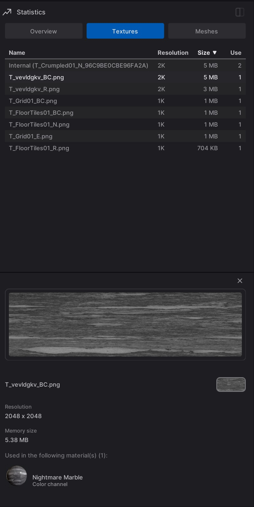
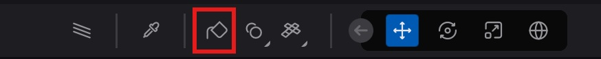
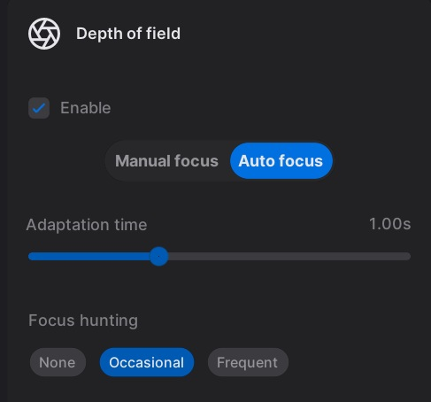

Twinmotion (Epic Games)
Developed through **4D Pipeline**, architecting high-performance tools and engine systems for industry-leading real-time visualization.
Core & Platform Engineering
Maintaining a massive Unreal Engine codebase through major version upgrades.
Managed critical engine regressions across 5 major Unreal Engine version upgrades (UE 5.1 to 5.6), ensuring stability for thousands of enterprise users.
- Mac Arm64 Migration: Spearheaded the packaging pipeline for native Apple Silicon support, unlocking a 20-30% performance increase over Rosetta.
- Rendering Pipeline Stability: Debugged complex shader regressions and skeletal mesh tangent recalculation bugs using RenderDoc and Unreal Insight.
- Automated Validation: Built comprehensive testing suites covering scene serialization, transform hierarchies, and complex Undo/Redo state management, eliminating manual QA overhead.
- VRAM Optimization: Rescued unplayable architectural scenes by identifying and fixing shadow and memory bottlenecks, restoring them to fluid framerates.
Case Study: Scene Capture State Sync
"Resolved a critical motion blur failure in high-resolution exports by architecting a custom frame sequence to manually trigger end-of-frame updates, ensuring the render thread had accurate state data before capture began."
Real-Time Telemetry & Monitoring
Architecting high-performance profiling tools for complex scene analysis.

Real-time Statistics Monitor processing telemetry for scenes with 1GB+ texture memory.
Statistics Monitor Architecture
Architected and developed a real-time profiling tool providing deep telemetry for resource usage, enabling both internal teams and users to optimize heavy scenes.
- High-Performance Telemetry: Processed real-time data for scenes exceeding 1GB of texture size and millions of polygons.
- Asset replacement on-the-fly: Enabled deep dependency tracking, allowing users to replace textures or meshes directly from the monitor to resolve performance issues.
- Refined UX: Implemented high-performance UIs for memory and complexity tracking, significantly improving code readability and extensibility.
UI Systems & Interaction Architecture
Building scalable interfaces and complex interaction systems for enterprise-scale datasets.
Material System Architecture
Solved a critical UX bottleneck by migrating the legacy Material Panel to a virtualized Unreal TileView (C++, Slate).
- Drastic Performance Gain: Reduced load times for 5,000+ materials from 15 minutes down to ~0.5 seconds.
- Multi-drop Material Tool: Engineered a frontend/backend solution for rapid, batched material application across multiple scene objects.
- Robust Undo/Redo: Architected a reliable transaction system for material and folder management.

Virtualized Material Panel and Multi-drop interaction logic.

Physical camera simulation and Auto Focus hunting logic.
Physical Camera Simulation
Bridged the gap between real-world optics and digital visualization by engineering systems that mimic physical hardware behavior.
- Focus Hunting Effects: Developed the mathematical backend for realistic focus hunting behavior in cinematic cameras.
- Dynamic Camera Lag: Implemented adjustable camera smoothing for professional-grade real-time walkthroughs.